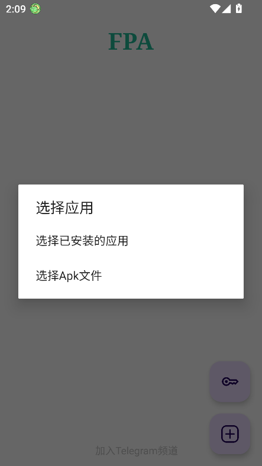

FPA 免 Root 改包：快问快答，8 个问题说清怎么玩
整理了关于 FPA 的一组快问快答——从它是什么、适合谁用、安装到常见坑，替你把上手前想问的都问了。
整理一篇关于 FPA 的快问快答。这套免 Root 动态加载框架在改包圈里不算冷门，但资料散、坑也多，干脆把新手最容易纠结的点集中答一遍。
FPA 到底是什么？
FPA 的官网对它的定位很明确：免 Root 的 Xposed 动态加载框架。传统 LSPosed 需要 Root 才能把 Hook 框架注入系统进程，FPA 走的是另一条路——直接把框架打进目标应用的 APK 包里，应用启动时自己加载自己的 Hook 逻辑，全程不需要 Root 权限。
它的核心思路叫「patch」：选好目标应用 → 用 FPA 给它的 APK 注入框架代码 → 重新签名 → 装成品。模块本身还是独立 APK，在 FPA 里勾选给对应应用，下次启动就自动生效。
谁需要它？
两类人最常见：一是想在常用应用里挂增强模块但手机没 Root、也不想折腾 Magisk 的；二是已经在玩模块但 LSPosed 方案被系统版本卡住的。
如果你的诉求是「给 QQ 去广告、给某音乐 App 解锁功能、给游戏挂个辅助模块」，而你又不想碰 Root——FPA 就是为这个场景设计的。反过来说，如果你手机已经 Root 了，直接上 LSPosed 往往更省心、兼容性也更好；FPA 的定位始终是「无 Root 替代方案」，不是全场景银弹。
怎么装起来？
前置条件很简单：FPA 本体从官方下载拿，再加你想用的模块 APK 和目标应用 APK，三样都装好。然后对目标应用执行 patch 流程。
这里有一个容易踩的坑：FPA 新版本打包的应用会检测 FPA 包名，FPA 本体被卸载、被手机管家禁掉、或被清理后台权限时，成品应用会直接闪退。所以装完别手贱卸 FPA，也记得给它开自启动和后台常驻权限——这是新手最常犯的低级错误。

patch 流程怎么走？
打开 FPA，选「选择目标应用」，挑你想改的那个（比如 QQ、汽水音乐），确认一下 patch 设置（参数含义拿不准就翻fpa文档）——默认配置对绝大多数场景够用，不用乱改。等它跑完，会在你指定的输出目录生成一个带 FPA 框架的新 APK。
接下来的步骤是：卸载原版应用（数据先备份！签名冲突是常事）→ 装 FPA 生成的成品包 → 回到 FPA 主界面，在已 patch 的应用列表里点它，进入作用域配置，把你装好的模块勾选进来。最后彻底杀后台重开应用，模块功能才会出现。
什么模块能挂，什么挂不了？
只看一条规则：模块作用域里有没有「系统框架」。作用域是单个具体应用的（QQ、TIM、某音乐……），可以试；作用域里包含「系统框架 / System Framework」的，直接放弃——FPA 碰不到系统进程，这类模块在免 Root 方案里一律加载不了。
过了作用域这关，还有第二道坎：FPA 只实现了部分 Xposed Hook API，模块调用了它没实现的接口，功能就会失效或闪退。公开资料里明确实测可用的只有几个名字：FunBox、QAuxiliary，以及汽水音乐场景下的 MoonHook、WinHook、Deer God。其余一律自测为准，别信任何「全兼容」的说法。
最容易出问题的是哪些环节？
首当其冲是模块架构不匹配——arm64、arm32、armAll、通用包，选对架构是加载成功的前提。其次是一次挂多个模块，建议先只挂一个跑稳再加，多模块同时调试是自己给自己找事。第三是没杀后台重开，模块在应用启动时挂载，后台驻留的旧进程感受不到新的作用域配置，这一点被新手忽略的比例极高。
最后是签名校验过不了。如果目标应用本身有较完善的签名校验，重签名后的包会被它识别并拒绝运行，表现就是启动即闪退。这类应用属于 FPA 过签能力覆盖范围之外，免 Root 方案没的解。
和 LSPatch 是什么关系？
两者是竞品关系、思路也有差异：FPA 采用本地模块模式，模块本身是手机上独立安装的 APK，patch 只把框架打进应用包；LSPatch 的做法是把模块和框架一起打进 APK，成品是自包含的单文件。两种方案各有优劣，FPA 的本地模式在切换模块时更灵活，但每次换模块都要进 FPA 勾选一遍；LSPatch 成品一步到位，但换模块就得重新 patch。
社区对两者的普遍评价是：FPA 上手门槛稍低、调试体验好一点；LSPatch 成品分发更方便。具体选哪个，看你自己的使用习惯。
值不值得长期用？
如果你是「单应用、单模块、固定需求」的场景——比如长期给 QQ 挂 QAuxiliary 去广告——FPA 完全够用，跑稳之后半年都不用动。但如果你的需求是多应用、多模块频繁切换，或者你追的应用版本更新很频繁（每个版本都要重新 patch），FPA 这套流程就显得有点繁琐了。
另外要接受一个现实：免 Root 改包没有全应用的银弹。FPA 能覆盖常见场景，但遇到签名校验完善的应用、或模块 API 对不上的情况，该失败还是会失败。把它定位成「够用的工具」而不是「万能方案」，用起来心态会好很多。
整套资料在三个仓库都能拿到：GitHub 主仓库维护原始文档，Gitee 同步方便国内访问，GitCode 留一份备份防单源失效，三个地址对应的软件目录路径完全一致，随你习惯选哪个拉。